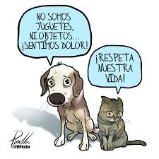
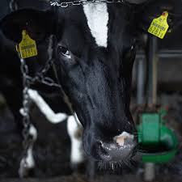
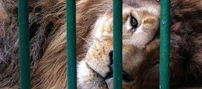
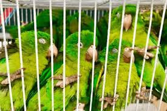
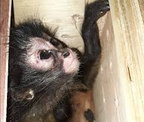

La violencia animal engloba actos intencionales de crueldad, como golpes, tortura o mutilación, además de la negligencia y el abandono. También incluye la privación de alimento, agua, atención médica y refugio. Es un problema social grave relacionado con la violencia familiar, la falta de empatía y la deshumanización.
El maltrato animal es considerado un indicador de violencia doméstica y familiar, ya que muchas veces antecede actos violentos contra personas. México ocupa uno de los primeros lugares en maltrato animal, con millones de perros y gatos viviendo en situación de calle.





En México, perros y gatos representan la mayoría de los casos reportados de violencia animal. Muchos viven en situación de abandono, sufriendo hambre, enfermedades y agresiones físicas. Otros animales afectados incluyen caballos, ganado y especies usadas en espectáculos.
El maltrato animal no es un problema menor. Refleja una crisis de empatía y violencia social. Transformar nuestra relación con los animales es fundamental para construir una sociedad más humana, compasiva y respetuosa.